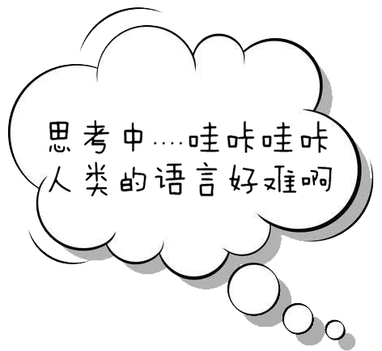
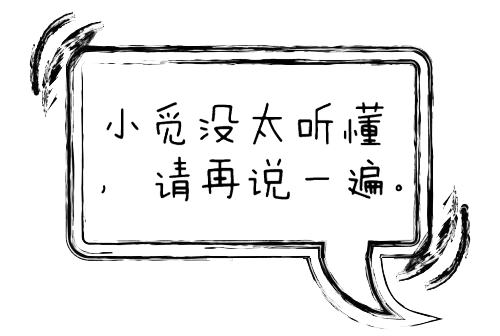

{% block index %}
    <script src="../static/js/yuyin.js"></script>

    <div id="tishi1" style="display: none">
        <div></div>
    </div>
    <div id="sikao" style="display: none">
        <div></div>
    </div>
    <div id="tishi" style="display: none">
        <div></div>
    </div>
    <div id="siri">
        <div class="he" id="sirib" style="display: none"></div>
    </div>
    <script>
        $('#siri').mouseover(function () {
            $("#sikao").fadeOut(1500);
            $("#tishi").fadeOut(2000);
            $("#tishi1").fadeIn(1000);
        });
        $('#siri').mouseout(function () {
            $("#tishi1").fadeOut(1000);
        });
        $('#siri').click(function () {
            $("#tishi1").fadeOut(1000);
            $("#sikao").fadeOut(1500);
            $("#tishi").fadeOut(2000);
            document.getElementById('sirib').style.display = 'block';
            startRecording();
            setTimeout(function () {
                document.getElementById('sirib').style.display = 'none';
                obtainRecord('/siri/', function (callbackvalue, e) {
                    if (callbackvalue == 1 || callbackvalue == '1') {
                        $("#tishi1").fadeOut(1000);
                        $("#sikao").fadeOut(1500);
                        $("#tishi").fadeIn(1500);
                    }
                    else if (callbackvalue == '正在努力识别......') {
                        $("#tishi1").fadeOut(1000);
                        $("#tishi").fadeOut(1500);
                        $("#sikao").fadeIn(1500);
                    }
                    else if (callbackvalue != 'cancel') {
                        window.location.href = callbackvalue;
                    }

                });
            }, 3 * 1000);

        });
        $('#yuyinimg').mousedown(function () {
            img = document.getElementById('yuyinimg');
            img.src = '../static/img/Icon/yuyin.gif';
            startRecording()
        });
        $('#yuyinimg').mouseup(function () {
            img = document.getElementById('yuyinimg');
            img.src = '../static/img/Icon/yuyin.png';
            obtainRecord('/yuyinshibie/', function (callbackvalue, e) {
                document.getElementById('citySelect').value = callbackvalue
            });
        });

        function startRecording() {
            HZRecorder.get(function (rec) {
                recorder = rec;
                recorder.start();
            });
        }

        function obtainRecord(url, callbake) {
            var record = recorder.upload(url, callbake)
        };
    </script>
{% endblock %}